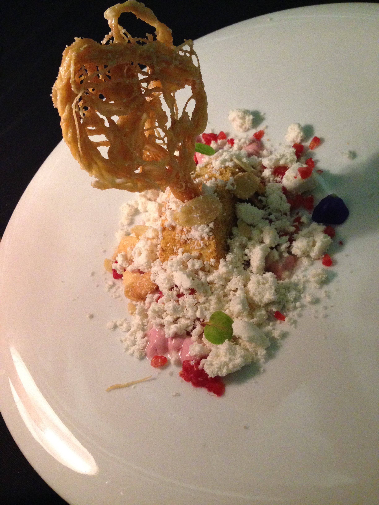

https://orcid.org/0009-0001-5365-5815
https://orcid.org/0009-0001-5365-5815
Here is my CV. Like a parody of a professor, I enjoy making espresso using a lever-pull machine and riding steel bikes with Campagnolo gears.
The best dessert I've ever eaten.
Apparently Cafe Artscience is no more.
The Third Thing
- Water is H2O,
- Hydrogen two parts,
- Oxygen one,
- But there is a third thing
- That makes it water
- And nobody knows what that is.